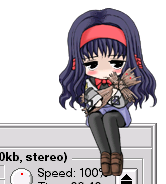

Moe Isizu (c) alfasystem.
| Moe |
Mascot Observation Environment |
Moe es un programa para mantener a una linda mascota en la ventana activa. ¿Qué tal poner algo más agradable para tu escritorio?
Plan y programación: Yun
Ilustración: Yu-Ki

|
 Moe Isizu (c) alfasystem. |
Moe es un programa para mantener a una linda mascota en la ventana activa. ¿Qué tal poner algo más agradable para tu escritorio? |
Plan y programación: Yun
Ilustración: Yu-Ki |